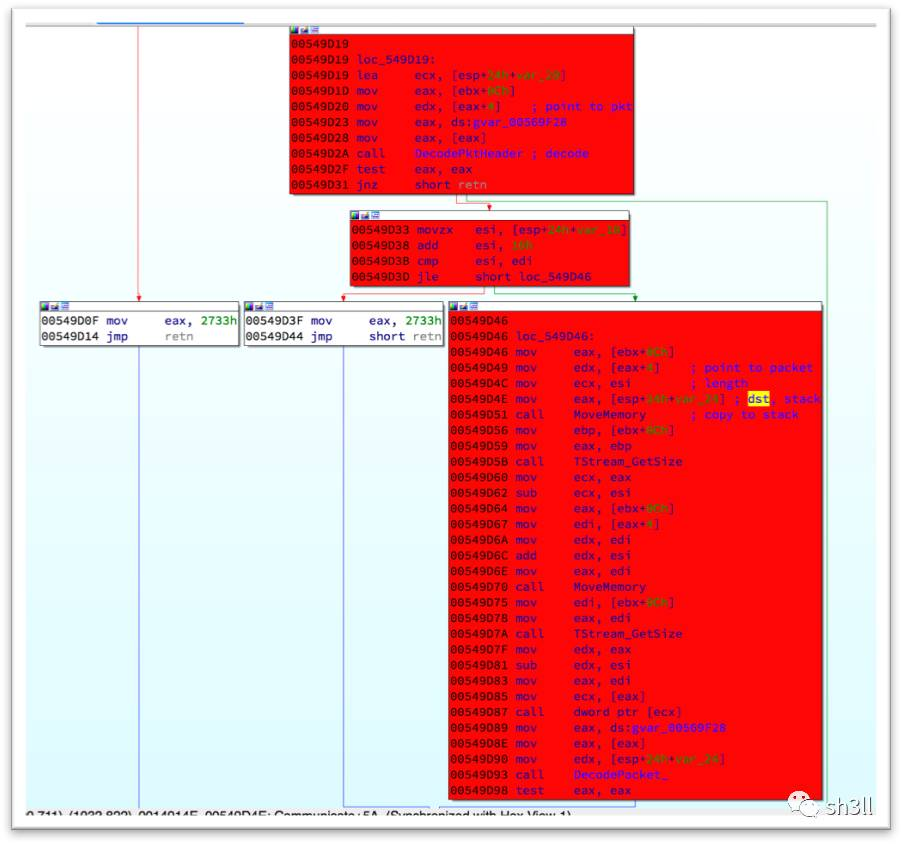
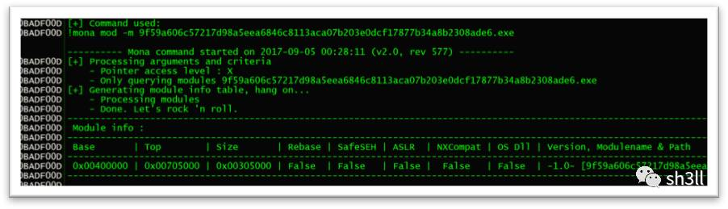

Stack overflow in PlugX RAT
Black Hat USA 2017 上 @professor__plum 分享了几款常见RAT（Xtreme、PlugX、Gh0st）中存在的漏洞，利用这些漏洞可以反向攻击 C&C Server，本文以 PlugX RAT 为例进行漏洞分析。
1. 漏洞分析
1.1 Delphi
PlugX RAT 由 Delphi 语言开发，直接使用 IDA 对其分析会因缺少符号表导致系统库函数无法识别，分析起来非常不方便。可以使用 IDR 加载 bin 文件，导出 IDC 脚本供 IDA 使用，如下：
逆向 Delphi 程序时还需要注意的一点就是传参方式，Delphi 中默认的传参方式是前 3 个参数通过寄存器 eax、edx、ecx 传递，其余参数通过堆栈传递，如上图中 ShowMessage、MoveMemory 的调用。
1.2 漏洞成因
漏洞出现在 Server 与 Client 的通信中：

Server 在接收到客户端的请求包后首先对包头进行解析，而后将整个包完整地拷贝到栈上 (0x00549D51 MoveMemory)，典型的栈溢出。有趣的是，在内存拷贝操作的之后开发者再一次对包进行解析 (0x00549D93 DecodePacket_)，在其中判断包的大小并且如果数据过大会进行弹框提示：
但此时上层栈帧已被破坏，再做检查为时已晚。
2. 漏洞利用
2.1 加解密函数
目前市面的 PlugX RAT 大概有 3 个版本，对此漏洞而言区别主要在于它们对流量加解密方式的不同：
以 Type I 为例可编写如下加解密函数：
2.2 保护机制的绕过

No GS、NO PIE，只需要考虑 DEP，而程序中存在丰富的 Gadgets，例如 CreateProcess、WinExec、VirtualAlloc、VirtualProtect 等，这使得通过 ROP 绕过 DEP 变得十分简单。
基于 VirtualProtect 可编写如下 ROP：
2.3 利用截图
可下载样本、IDB 及完整的 exploit：GitHub